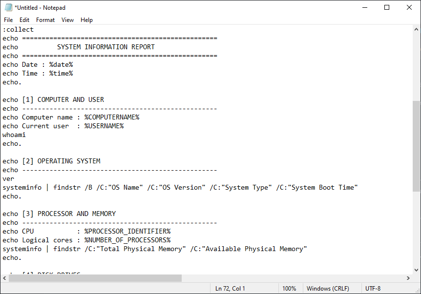
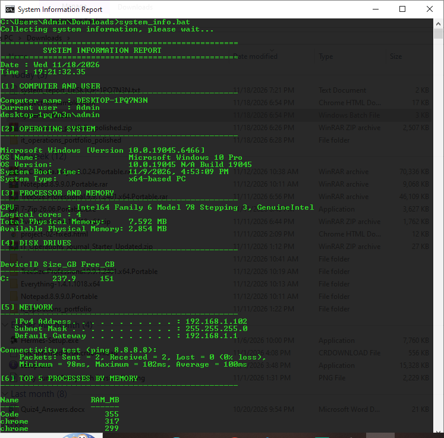

Building a Simple Batch Script
Batch Automation — creating a .bat file that automatically runs several CMD commands and displays system information.
01 / Mission goal
The goal of this project is to create a batch file (a Batch File with the .bat extension) that, when run once, automatically executes a series of CMD commands one after another and displays important system information. This information includes the computer and user name, operating system version, processor and RAM, disk drive status, network settings and the most resource-heavy processes. The output is also saved to a text file so it can be used as a report. This script replaces running each command manually and separately, and saves time in IT support work.
02 / Tools and runtime environment
Notepad: a text editor for writing the script code and saving it with the .bat extension (with Save as type = All files).
Command Prompt (CMD): the Windows command interpreter that runs the .bat file.
Runtime environment: Windows 10 or 11. The commands used include hostname, whoami, ver, systeminfo, ipconfig, ping, findstr and, for disk and process information, a short PowerShell call.
03 / Execution steps
- Creating the file: we open Notepad and save the file as system_info.bat. In the Save window, we set Save as type to All files so that the .txt extension is not added.
- Initial settings: with @echo off we turn off the display of the commands themselves, with chcp 65001 we enable the UTF-8 code page, and with title and color we set the window's appearance.
- Defining the output path: we create the OUT variable using the computer name so that the report is saved in the same folder as the script.
- Writing the report sections: under the :collect label we write the commands section by section: user and computer, operating system, processor and memory, disks, network and the most resource-heavy processes. We use findstr to filter the long systeminfo output.
- Saving and displaying the output: the label's output is saved to a txt file with the > operator and then shown on screen with type. At the end, pause keeps the window open.
- Running and testing: we double-click the file (or run it in CMD), check the output and open the report file that was created.
Complete script code
The complete system_info.bat file is also included with this project in the GitHub repository.
04 / Findings and technical analysis
| Report section | Main command | Information displayed |
|---|---|---|
| User and computer | hostname · whoami | Device name and active user account |
| Operating system | ver · systeminfo | Windows name and version, system type, last boot time |
| Processor and RAM | %PROCESSOR_IDENTIFIER% · systeminfo | CPU model, number of logical cores, total and free RAM |
| Disks | Get-CimInstance Win32_LogicalDisk | Total capacity and free space of each drive |
| Network | ipconfig · ping | IPv4 address, Subnet Mask, Gateway and connection status |
| Processes | Get-Process | The five processes using the most RAM |
- Redirecting the output with > means the result is both shown on screen and available as a text file that can be archived and sent.
- Using findstr turns the long systeminfo output into a few useful lines and makes the report more readable.
- The wmic tool has been removed or is being removed in newer versions of Windows 11; for this reason PowerShell was used for disks and processes so that the script also works on newer versions.
- Running the systeminfo command takes a few seconds; the “Collecting...” message at the start of the script explains this delay to the user.
- Running the file with Run as administrator may be needed to access some information, but the sections of this report also work with normal access.
05 / Problems and solutions
| Problem | Solution |
|---|---|
| File saved as system_info.bat.txt | Select All files in Save as type and enable showing file extensions in File Explorer |
| The CMD window closes quickly after running | Add the pause command at the end of the script |
| “wmic is not recognized” error on Windows 11 | Replace wmic with PowerShell commands (Get-CimInstance) |
| The systeminfo output was very long | Filter with findstr and show only the needed lines |
| On a localized Windows or one with a different language, the systeminfo filter returns no output | The filters depend on the English text of the output; run it on an English-language Windows or adjust the findstr phrases to the system language |
| Characters displayed incorrectly | Use chcp 65001 and keep the script's text in English |
06 / Visual documentation




07 / Summary and lessons learned
In this project I learned that a simple Batch file can automatically run several CMD commands and turn repetitive troubleshooting tasks into a single click. I became familiar with concepts such as variables, labels and call, output redirection, filtering with findstr and combining CMD with PowerShell, and saw that when writing a script, compatibility with different Windows versions must also be considered.
This script can be a foundation for IT support tools; for example, sections such as checking disk space, cleaning temporary files or producing a periodic report with Task Scheduler can be added to it later.